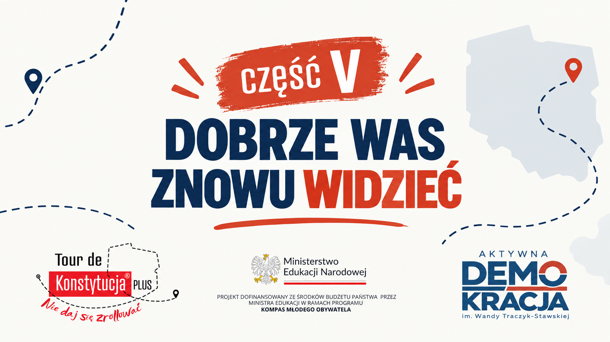

<!doctype html>
<html lang="pl"><meta charset="utf-8"><meta name="viewport" content="width=device-width,initial-scale=1"><title>Tarcze — Stop, sprawdzam</title>
<style>
*{box-sizing:border-box}html,body{margin:0;width:100%;height:100%;background:#000;font-family:system-ui;color:white;overflow:hidden}main{width:100%;height:100%;position:relative}img,video{position:absolute;width:100%;height:100%;object-fit:contain;background:#000} [hidden]{display:none!important}nav{position:fixed;bottom:18px;left:50%;transform:translateX(-50%);display:flex;align-items:center;gap:10px;padding:9px 13px;background:#062544e8;border:1px solid #ffffff33;border-radius:14px;transition:opacity .35s;max-width:96vw;white-space:nowrap}body.quiet nav{opacity:0}button{background:#fff;color:#082b4d;border:0;border-radius:8px;padding:9px 13px;font-size:15px;cursor:pointer}button:focus-visible{outline:3px solid #f04628;outline-offset:3px}#status{font-size:13px}#error{position:fixed;top:20px;left:20px;right:20px;background:#a31e12;padding:15px;border-radius:8px} @media(max-width:600px){#status{white-space:normal}nav{gap:5px}button{padding:8px}}
</style>
<main aria-label="Prezentacja tarcz"><video id="a" playsinline preload="auto" hidden></video><video id="b" playsinline preload="auto" hidden></video></main>
<nav aria-label="Sterowanie"><button id="back" title="Strzałka w lewo">←</button><span id="status" aria-live="polite"></span><button id="next" title="Strzałka w prawo">Dalej →</button><button id="pause" title="Spacja — pauza / wznowienie">Odtwórz</button><button id="full" title="Pełny ekran — F" aria-pressed="false">Pełny ekran</button></nav><div id="error" role="alert" hidden></div>
<script src="app.js?v=20261019-1"></script></html>